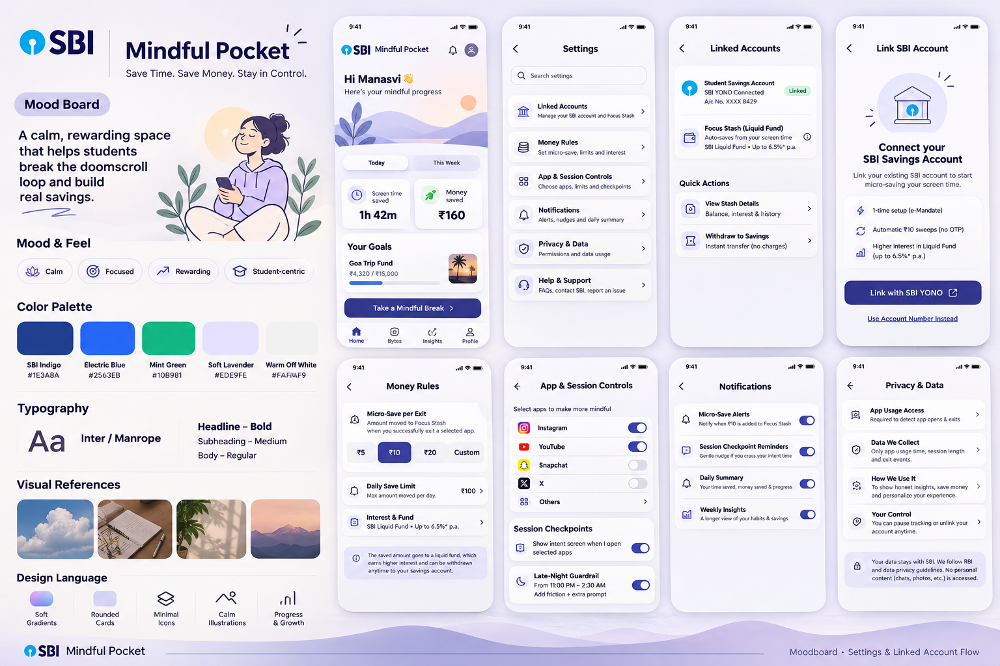
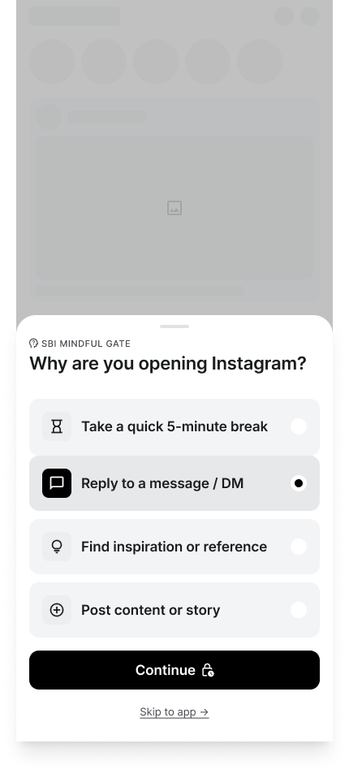
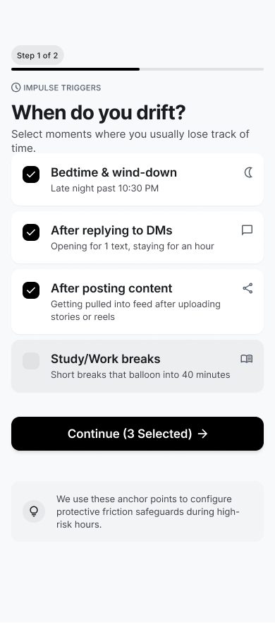
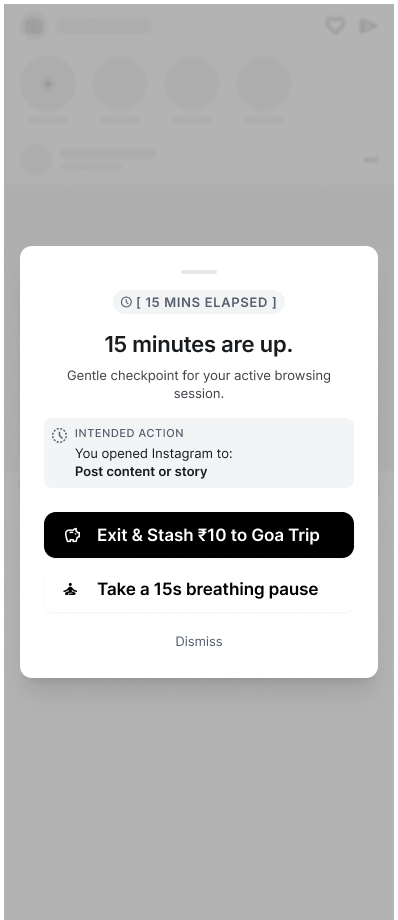
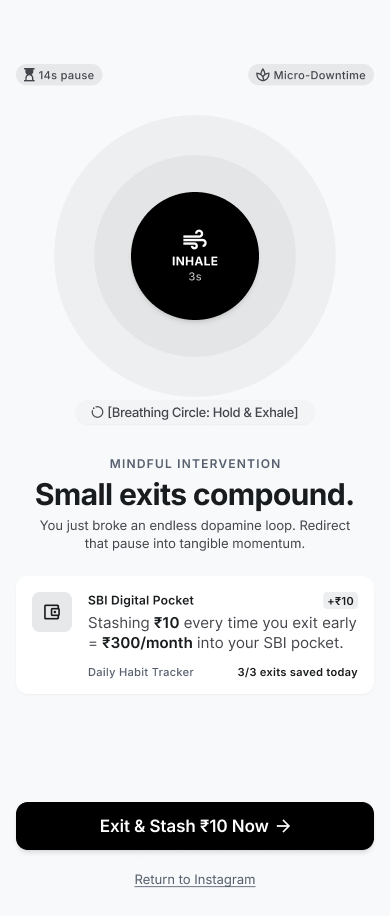
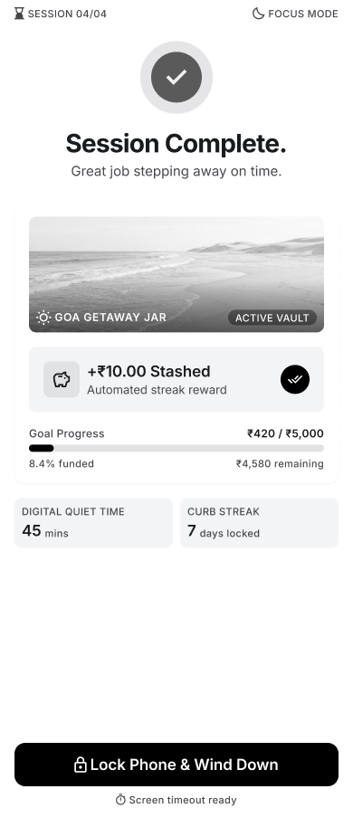
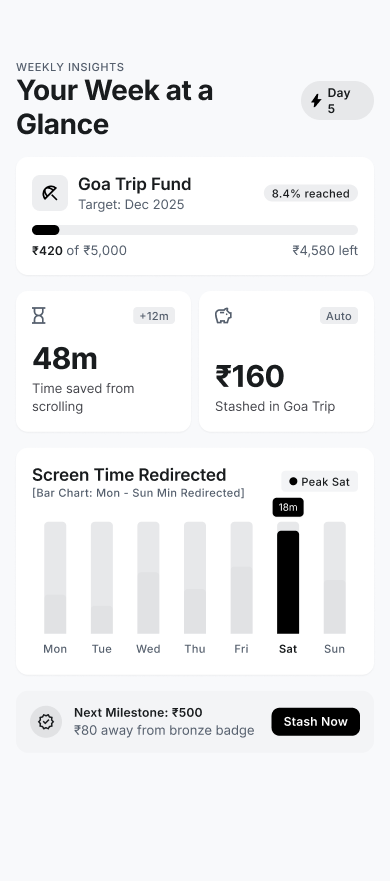
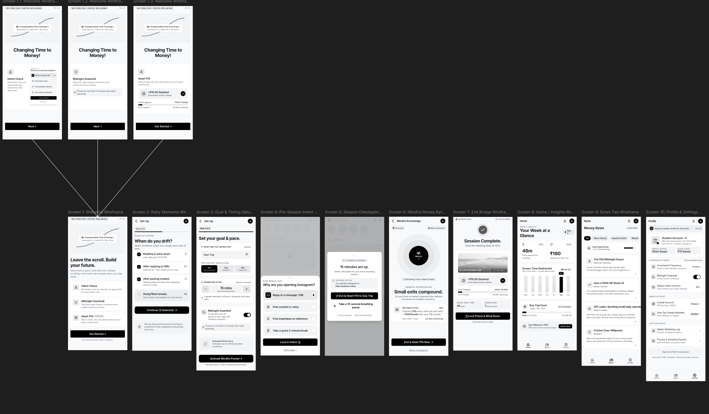

FinTech / Behavioral Product Design / SBI YONO Concept
SBI Mindful Pocket
Converting late-night doomscroll friction into compounding micro-savings (+₹10/save) for students aged 18–24.

The Core Problem
"How might we help students leave an infinite scroll without shame—and convert that moment of self-control into an automatic, compounding financial habit?"
The Midnight Scroll & Micro-Leakage Trap
College students don't open Instagram with the intention of losing two hours. They open it to reply to a classmate's project message. But the algorithmic feed intercepts their attention—turning a 2-minute check-in into a late-night trance that destroys sleep and accelerates impulsive UPI food orders and checkout spending.
Primary survey, n = 57 · 8 interviews
"Bas sone se pehle ek baar last time Insta check kar leti hu… I spent genuinely two hours watching Reels without realizing."
— Participant U6 (The Bedtime DM Trap · Graphic Era University)"I thought I'd spend half an hour. When I looked at the clock and saw 1:40 AM, I felt pure shock. Hard screen lockouts just make me hit 'Ignore for 15 minutes'."
— Participant U1 (The Clock Shock & Limit Bypass)Why Existing Systems & Traditional Banking Fail
1. The Blocker Paradox (Punitive Shame Fails)
Built-in screen-time tools are easy to dismiss and can feel punitive or patronising. In interviews, students described bypassing strict limits (see U1 below).
2. The Co-Located Task Conflict
Students cannot delete or blindly block Instagram because university societies, course groups, and peer DMs live there. Indiscriminate app blocking creates acute operational friction for genuine college responsibilities.
3. The FinTech Wall for Gen-Z
Typical investing apps require KYC and PAN onboarding and often set minimum amounts that feel large against a student's pocket money. (Validation note: specific minimums and pocket-money figures require formal market sampling).
The Mindful Loop: From Impulse to Compounding Wealth
Mindful Pocket inverts the friction model. Instead of punishing app usage, it treats every intentional exit as a high-agency victory—instantly rewarding the student with a tangible +₹10 micro-saving into a liquid vault.
Pre-Session Intent Gating & The 15-Second Mindful Checkpoint
Activating System 2 deliberate thinking before dopamine capture occurs, followed by an autonomous exit bridge.
This project represents completed behavioral architecture and high-fidelity wireframes. Visual design and production token systems are in progress. Click any wireframe to inspect in full resolution.
 1. Onboarding & Setup
1. Onboarding & Setup
 2. Goal Setup (+₹10 Save)
2. Goal Setup (+₹10 Save)

3. Pre-Session Intent Gate
4. Trigger App Selection
5. Checkpoint Reflection
6. 15-Sec Breathing Pause
7. Exit Celebration (+₹10)
8. Dual Progress Dashboard 9. Financial Bytes Feed
9. Financial Bytes Feed
 10. Cap & Mandate Settings
10. Cap & Mandate Settings
Behavioral Interaction Details
- Intent Gating: On opening a monitored app, an unobtrusive 1-tap sheet asks: "What is your intention?" Options like "Reply to DM" allow instant access without scolding.
- 15-Second Breath Cue: At the student's selected milestone (e.g. 15 min), a gentle ambient pulse introduces a reflective pause. No jarring crash or locked screen.
- Uncompromised Student Autonomy: The user has two explicit choices: "Continue Mindfully" (zero guilt, no lockouts) or "Exit & Stash (+₹10)".
- Immediate Dopamine Replacement: Exiting triggers an instant celebration animation: +₹10 credited to the student's personal goal (e.g., Goa Trip Fund, Laptop Stash).
Complete Information Architecture & Wireframe Progression
A compact 3-tab bottom navigation (Home · Bytes · Profile) designed to prevent secondary doomscrolling within the banking app itself.

Business case (hypotheses to validate)
A sustainable product also has to work for the bank. The points below are hypotheses, not measured results.
Early Primary-Bank Relationship
Hypothesis: an early student relationship could build primary-bank loyalty, with small daily savings pooling at low acquisition cost. (Open design decision: CASA deposit vs. liquid fund sweep; both models explored).
Long-Term Product Affinity
Hypothesis: an early primary-bank relationship could support later products such as education loans and cards. Untested.
Brand-Sponsored Savings Milestones
Hypothesis: partner-funded rewards could boost savings milestones. Sponsorship terms are untested.
Batch UPI Settlement Design
Batching the day's micro-saves into one collection (capped at ₹100) means far fewer individual mandate transactions than charging ₹10 per exit.
Cross-Bank Funding & NPCI e-Mandate Pipeline
Students can fund their Mindful Pocket from any Indian bank (SBI, HDFC, ICICI, Axis) via an authorized daily recurring mandate.

Compliance, Ethics & Regulatory Safeguards
Key Safeguards Enforced by Design
- Zero Shame Vocabulary: The interface strictly eliminates punitive words like "addicted", "failed limit", or "punished". Exits are framed exclusively as high-agency wins.
- Zero Forced Withdrawals: Money is NEVER deducted because a student stays in an app. Debits only occur when the student explicitly chooses to exit and stash.
- Absolute Ledger Transparency: The UI maintains a strict separation between Pending Commitments (behavioral tracking) and Confirmed Bank Balances. No investment is reported before NPCI clearance.
- RBI and NPCI alignment (design intent): Configurable daily caps (e.g. ₹100), pre-debit notifications and 1-tap pause/revoke, designed around RBI e-mandate guidelines. Concept only; requires regulatory and partner review before any launch.
- Privacy by design: The concept uses only on-device usage timestamps through Android
UsageStatsManagerand iOSFamilyControls. It never reads messages, photos or browsing data.
Research & Feasibility Evaluation
- Students exceed intended screen time in-app and report "clock shock".
- Late-night overruns (11 PM - 2 AM) generate acute regret and anxiety.
- Many extended browsing sessions originate from checking a single DM or notification.
- Willingness to authorize recurring UPI AutoPay e-mandates for micro-savings.
- Multi-bank cross-funding success and auto-sweep settlement latency.
- Student qualification and KYC friction for liquid mutual fund folios.
- Unit economics for brand sponsorship and merchant streak rewards.
Platform Technical Feasibility
Android: Usage monitoring relies on UsageStatsManager. Interstitial overlay prompts depend on user-granted permissions and OS background execution limits; Google Play policy strictly prohibits using Accessibility Services as blanket interceptors.
iOS: Relies on Apple's official FamilyControls and ManagedSettings entitlements inside the sandbox, requiring specialized entitlement approval.
Proposed Usability Testing Plan
- Conduct 5 to 8 formative usability tests evaluating onboarding comprehension and trigger configuration.
- Execute a 3-stage mental model test verifying student comprehension of where saved funds reside: immediate exit, daily mandate execution, and liquid fund allotment.
- Run an A/B study comparing the guilt-free mindful checkpoint against standard operating system lockouts to measure perceived agency and compliance.
Provenance & Regulatory Frameworks
- Primary user research: 57-student survey respondents, 8 in-depth interviews (U1 to U8).
- NPCI, "AutoPay facility on UPI for recurring payments" (2020).
- RBI, "Processing of e-mandate in UPI for recurring transactions" (2020).
- AMFI, "Risks in Mutual Funds" and SEBI liquid-scheme investment guidelines.
- Apple Developer, "Requesting the Family Controls entitlement" documentation.
Proposed technical and financial integrations require regulatory review and partner validation prior to any deployment.